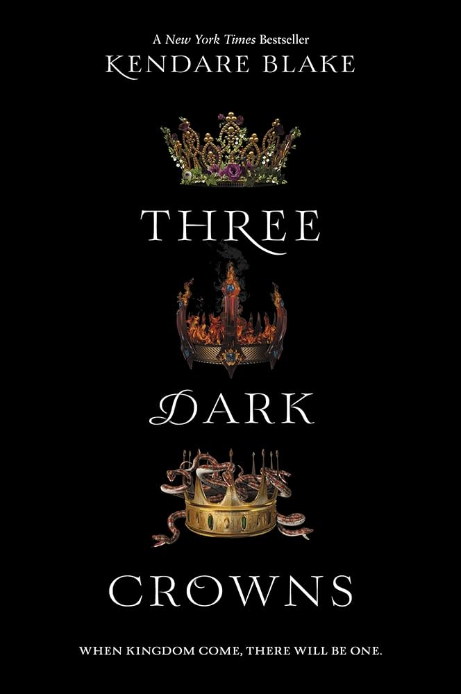
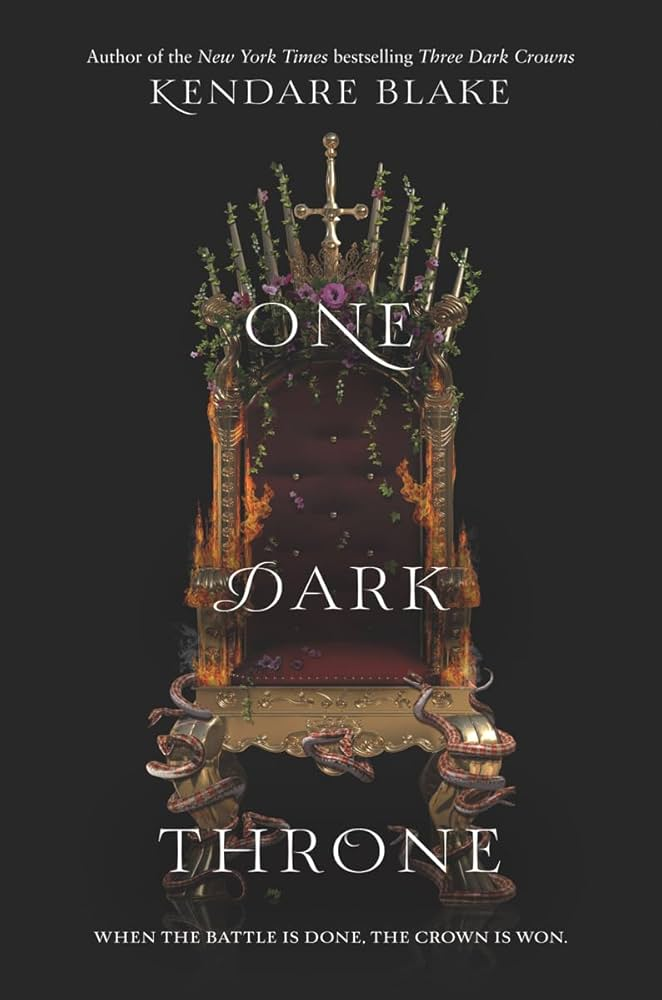
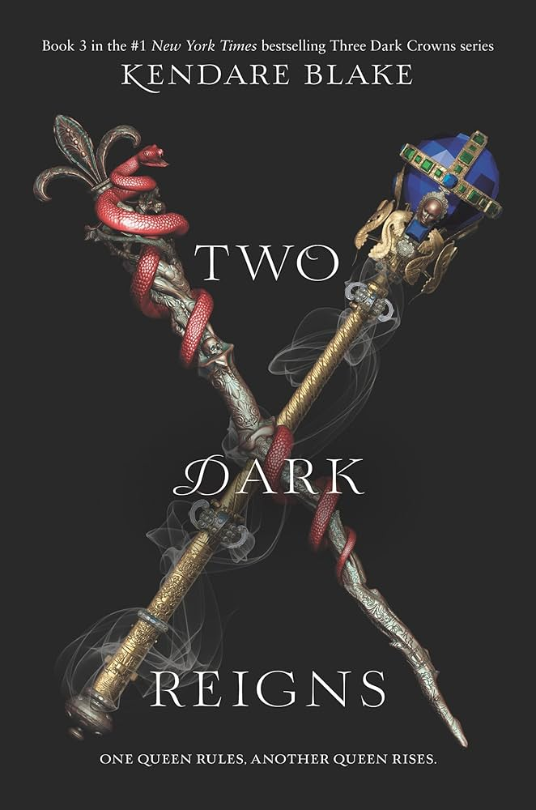
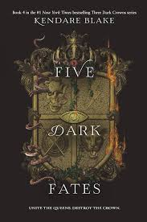

3 Dark Crowns Series
One of the first fiction book series I've read in a long time. I remember reading a book in high school called
red queen and I searched up books similar to Red Queen and I found this series. This series was so good that I spent hours reading it
everyday and finished all books in a couple days.
The story was very fun to read and was a good break from all the self help and business books I've been reading. These book taught me
a lot about how a story should progress and how fights are described.
I recently read this manhwa and the remaining in the web novel called "Beginning After the Fall". Although the manhwa is more action itself, the book itself
tackled some extremely interesting themes. One being the world you believe in as you read a book. Although you know it's not real, it feels real.
You feel like you're following in the lives of the characters and their struggles and you become invested in what happens.
This is one of the first books I've felt that way in a long time. Things that happened in the book had a very real world effect on how I felt
as the way the book is written has you rooting for all its characters, and not just one.
Tackles some interesting themes of challenging the status quo, rebellion, familial love, betrayal, and makes you question tradition.